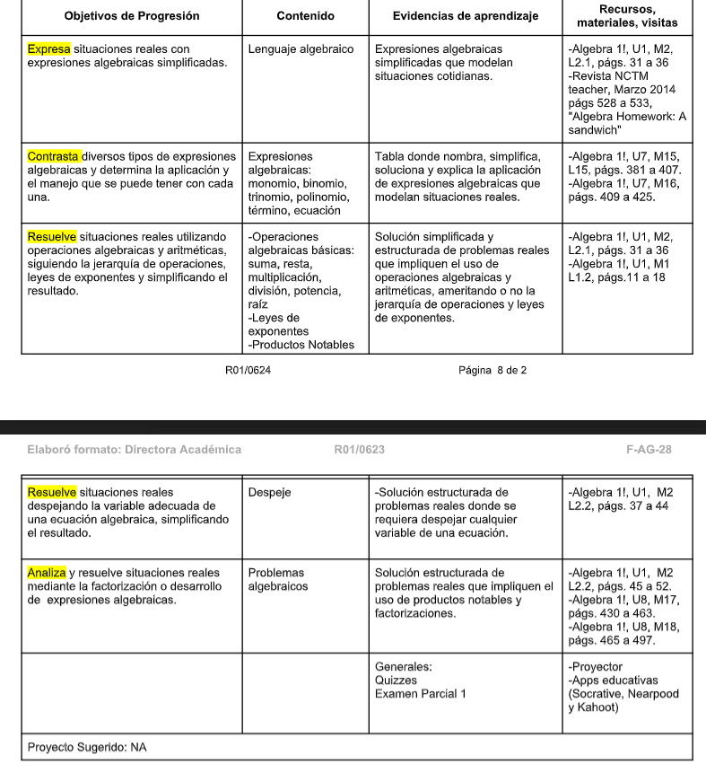

Materias de Repaso
Inicio
Semestres
Atrás
Selecciona un tema de repaso
Expresiones algebraicas
Operaciones algebraicas, leyes de exponentes, productos notables, y despeje
Problemas algebraicos (disponibles en el repaso)
Repaso hecho por el profe.
Aprendizajes esperados

Esta página fue actualizada en el primer semestre del ciclo 24-25